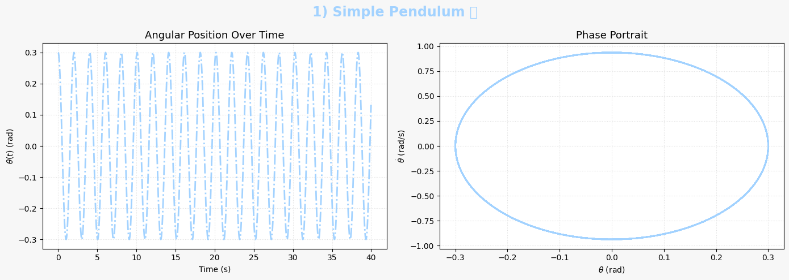
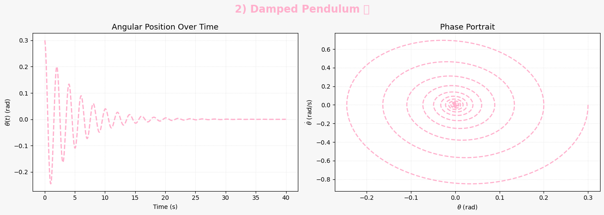
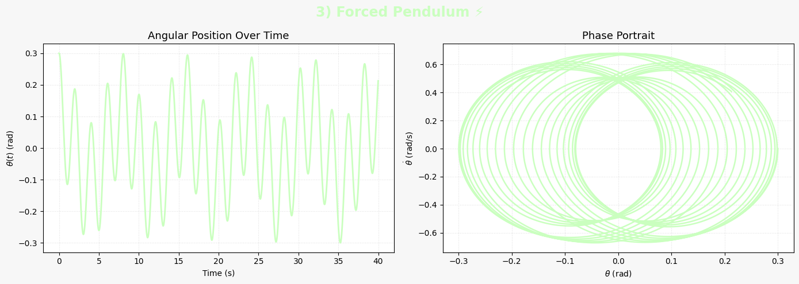
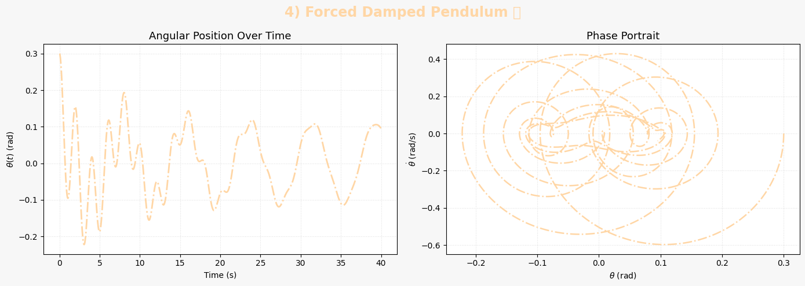
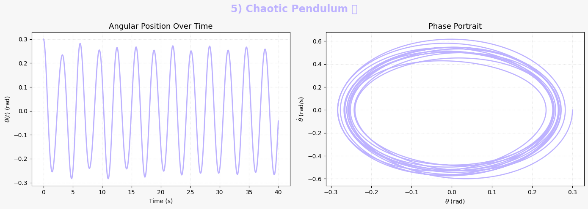

Problem 2
✅ Task Breakdown: Investigating the Dynamics of a Forced Damped Pendulum
I. Theoretical Foundation
📌 Governing Equation
The motion of a forced damped pendulum is governed by the second-order nonlinear differential equation:
Where:
- \(\theta(t)\): Angular displacement
- \(b\): Damping coefficient
- \(g\): Gravitational acceleration
- \(L\): Length of the pendulum
- \(A\): Amplitude of the external driving force
- \(\omega\): Frequency of the external driving force
📌 Small-Angle Approximation
For small oscillations where \(|\theta| \ll 1\), we can use the approximation:
Substituting this into the governing equation gives:
This is a linear second-order nonhomogeneous differential equation and can be analyzed more easily than the original nonlinear equation.
📌 Approximate Analytical Solution
The general solution consists of:
- A homogeneous solution (transient part) depending on initial conditions and damping
- A particular solution (steady-state) driven by \(A\cos(\omega t)\)
Assuming a solution of the form:
Then, under steady-state conditions, we find:
Where:
- \(\Theta\): Steady-state amplitude
- \(\delta\): Phase lag between driving force and response
📌 Resonance Condition
Resonance occurs when the denominator is minimized:
At this frequency:
- The amplitude \(\Theta\) is maximized
- Energy input from the driving force matches the natural oscillation frequency
- Physical systems can experience large oscillations (resonance phenomenon)
II. Analysis of Dynamics
📌 Parameter Dependencies
Study how varying the following parameters affects the system:
- Damping coefficient \(b\):
- Higher \(b\): Faster decay of oscillations, suppresses chaos
-
Lower \(b\): Allows more complex behavior (e.g., quasiperiodicity, chaos)
-
Driving amplitude \(A\):
- Small \(A\): Linear, predictable motion
-
Large \(A\): Can induce chaotic behavior
-
Driving frequency \(\omega\):
- Near resonance: Maximum energy transfer
- Away from resonance: Damped response
📌 Characterizing Motion Regimes
Depending on parameters, the pendulum may exhibit:
- Periodic motion:
- Oscillations repeat after a fixed time
-
Seen when damping and driving are moderate
-
Quasiperiodic motion:
- Oscillations never exactly repeat but show structured patterns
-
Multiple incommensurate frequencies involved
-
Chaotic motion:
- Sensitive dependence on initial conditions
- Aperiodic and seemingly random
- Detected using tools like Poincaré sections and Lyapunov exponents
📌 Physical Interpretations
- Periodic: Predictable; useful in clocks and timing systems
- Quasiperiodic: Found in some biological rhythms and coupled oscillators
- Chaotic: Reflects unpredictability in systems like weather patterns or turbulent flows
III. 🛠️ Practical Applications
The forced damped pendulum models a variety of real-world systems that involve periodic driving and energy dissipation. Below are some key applications:
🔋 1. Energy Harvesting Devices
- Piezoelectric or electromagnetic harvesters often model their mechanical components as damped oscillators with forcing.
- Vibrations in the environment serve as the driving force.
- Optimal energy harvesting occurs near resonance, where the amplitude of motion is maximized.
- The governing dynamics resemble:
$$ \frac{d^2\theta}{dt^2} + b\frac{d\theta}{dt} + \frac{g}{L} \theta = A\cos(\omega t) $$
- Tuning the system to resonate at ambient vibration frequencies enhances energy output.
🌉 2. Suspension Bridges and Structural Dynamics
- Components of bridges or tall buildings behave like forced oscillators under periodic loads (e.g., wind, traffic).
- The infamous Tacoma Narrows Bridge collapse was due to large-amplitude oscillations caused by wind-driven resonance.
- Proper damping (\(b\)) and tuning of natural frequency (\(\sqrt{g/L}\)) are crucial in design.
⚡ 3. Driven RLC Circuits
- Electrical analog of the pendulum:
$$ L\frac{d^2q}{dt^2} + R\frac{dq}{dt} + \frac{q}{C} = V_0 \cos(\omega t) $$
- This is mathematically identical to the forced damped pendulum equation.
- \(L\), \(R\), and \(C\) correspond to inertia, damping, and restoring force, respectively.
- Used to study resonance, filtering, and signal amplification in electronics.
IV. 🧮 Computational Implementation
To study the forced damped pendulum beyond analytical approximations, we implement a numerical simulation using Python.
📌 1. Differential Equation
We rewrite the second-order ODE as a system of first-order equations:
Let:
- \(\theta = x_1\)
- \(\dot{\theta} = x_2\)
Then:
💻 2. Python Implementation (Vısual)





import numpy as np
import matplotlib.pyplot as plt
# :straight_ruler: Time parameters
dt = 0.01
t_max = 40
t = np.arange(0, t_max, dt)
L = 1.0
g = 9.81
omega_0 = np.sqrt(g / L)
# :orange_heart: New pastel color palette
pastel_colors = ['#a2d2ff', '#ffafcc', '#caffbf', '#ffd6a5', '#bdb2ff']
# :repeat: Runge-Kutta 4th Order Method
def runge_kutta(f, Y0, t):
Y = np.zeros((len(t), 2))
Y[0] = Y0
for i in range(1, len(t)):
k1 = f(t[i-1], Y[i-1])
k2 = f(t[i-1] + dt/2, Y[i-1] + dt/2 * k1)
k3 = f(t[i-1] + dt/2, Y[i-1] + dt/2 * k2)
k4 = f(t[i-1] + dt, Y[i-1] + dt * k3)
Y[i] = Y[i-1] + dt/6 * (k1 + 2*k2 + 2*k3 + k4)
return Y
# :art: Enhanced Plot Function
def plot_pendulum(t, Y, title, color, linestyle='-', marker=None):
theta = (Y[:, 0] + np.pi) % (2*np.pi) - np.pi
theta_dot = Y[:, 1]
fig, axs = plt.subplots(1, 2, figsize=(14, 5), facecolor="#f7f7f7")
fig.suptitle(title, fontsize=17, fontweight='bold', color=color)
# Time series
axs[0].plot(t, theta, color=color, linestyle=linestyle, linewidth=2)
axs[0].set_title("Angular Position Over Time", fontsize=13)
axs[0].set_xlabel("Time (s)")
axs[0].set_ylabel(r"$\theta(t)$ (rad)")
axs[0].grid(True, color='#e0e0e0', linestyle=':', linewidth=0.8)
# Phase portrait
axs[1].plot(theta, theta_dot, color=color, linestyle=linestyle, linewidth=1.8)
axs[1].set_title("Phase Portrait", fontsize=13)
axs[1].set_xlabel(r"$\theta$ (rad)")
axs[1].set_ylabel(r"$\dot{\theta}$ (rad/s)")
axs[1].grid(True, color='#e0e0e0', linestyle=':', linewidth=0.8)
plt.tight_layout()
plt.show()
# :dart: Initial conditions
Y0 = np.array([0.3, 0.0])
# :one: Simple Pendulum
def simple(t, Y):
theta, theta_dot = Y
return np.array([theta_dot, -omega_0**2 * np.sin(theta)])
Y = runge_kutta(simple, Y0, t)
plot_pendulum(t, Y, "1) Simple Pendulum :crescent_moon:", pastel_colors[0], linestyle='-.')
# :two: Damped Pendulum
gamma = 0.4
def damped(t, Y):
theta, theta_dot = Y
return np.array([theta_dot, -gamma * theta_dot - omega_0**2 * np.sin(theta)])
Y = runge_kutta(damped, Y0, t)
plot_pendulum(t, Y, "2) Damped Pendulum :droplet:", pastel_colors[1], linestyle='--')
# :three: Forced (no damping)
A = 1.0
omega = 0.8
def forced(t, Y):
theta, theta_dot = Y
return np.array([theta_dot, -omega_0**2 * np.sin(theta) + A * np.cos(omega * t)])
Y = runge_kutta(forced, Y0, t)
plot_pendulum(t, Y, "3) Forced Pendulum :zap:", pastel_colors[2], linestyle='-')
# :four: Forced + Damped
gamma = 0.2
def forced_damped(t, Y):
theta, theta_dot = Y
return np.array([theta_dot, -gamma * theta_dot - omega_0**2 * np.sin(theta) + A * np.cos(omega * t)])
Y = runge_kutta(forced_damped, Y0, t)
plot_pendulum(t, Y, "4) Forced Damped Pendulum :cyclone:", pastel_colors[3], linestyle='dashdot')
# :five: Chaotic / Resonant Case
A = 1.5
omega = 2.0
gamma = 0.1
def chaotic(t, Y):
theta, theta_dot = Y
return np.array([theta_dot, -gamma * theta_dot - omega_0**2 * np.sin(theta) + A * np.cos(omega * t)])
Y = runge_kutta(chaotic, Y0, t)
plot_pendulum(t, Y, "5) Chaotic Pendulum :fire:", pastel_colors[4], linestyle='solid')
✅ Bifurcation Diagram (Optional Advanced)
To construct a bifurcation diagram:
- Vary \(A\) or \(\omega\) over a range
- Plot sampled values of \(\theta\) after transients decay
- Requires looping over parameters and saving final cycle values
👉 This can be added later for a deeper nonlinear analysis.
✅ With these tools, you can fully explore the transition to chaos, resonance peaks, and sensitive dependence on parameters and initial conditions.
Let me know if you'd like the bifurcation loop or enhancements like interactive sliders!